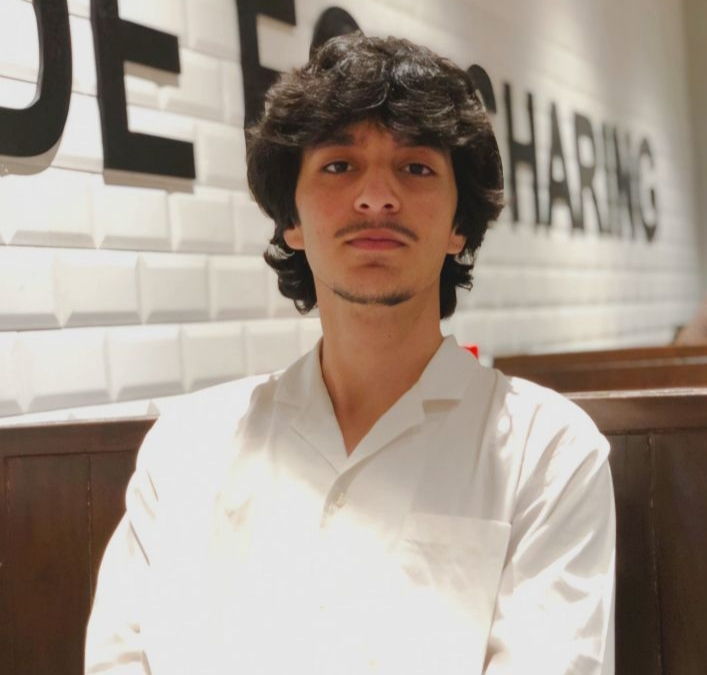

Sleep Hygiene: A Research-Based Guide
Exploring the science of sleep, healthy sleep habits, circadian rhythms and their impact on human well-being.
Read research ↗A PERSONAL JOURNAL OF IDEAS
A growing collection of thoughts, questions and discoveries about the world around us — and the worlds within us.
Explore the journal ↘Welcome to my corner of the internet.
Ideas don't have borders. Neither should curiosity.

A LITTLE ABOUT ME
I'm a student working towards a future in Artificial Intelligence and Machine Learning. But my curiosity goes far beyond technology. I enjoy exploring different subjects, researching unfamiliar ideas and learning things outside my academic interests; from running and fitness to philosophy and science.
That's why I created The Inner Atlas: a little corner of the internet where I can explore ideas, share my research, document interesting discoveries and write about things worth learning.
I hope you find something interesting here, learn something new, or discover a perspective you hadn't considered before. Feel free to explore, read, share your thoughts and learn alongside me. After all, curiosity is better when shared!
Explore my writings ↘THE JOURNAL
Exploring the science of sleep, healthy sleep habits, circadian rhythms and their impact on human well-being.
Read research ↗A NOTE TO THE READER
“Every discovery begins with a willingness to understand”— A reminder to stay curious